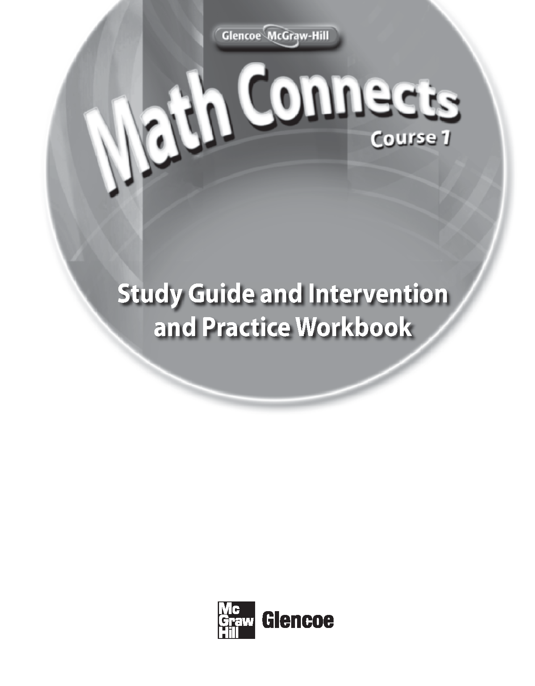
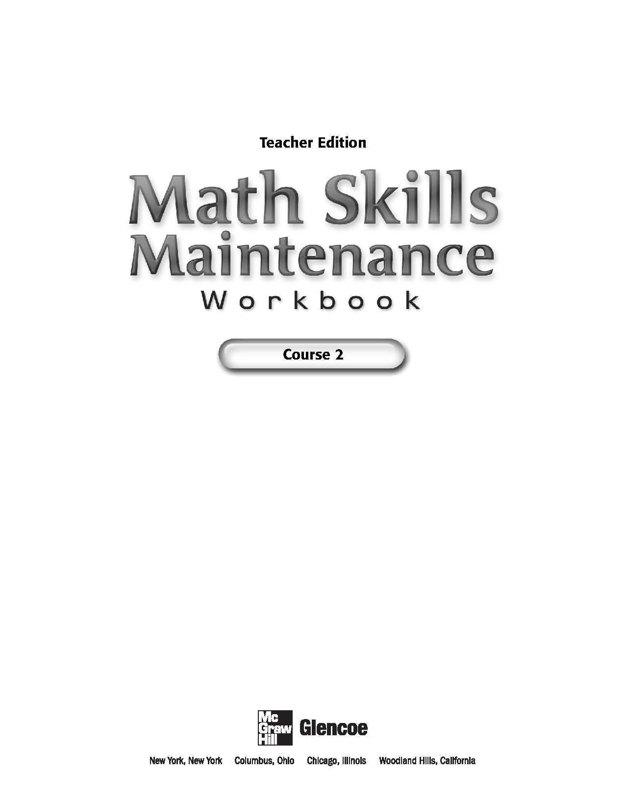
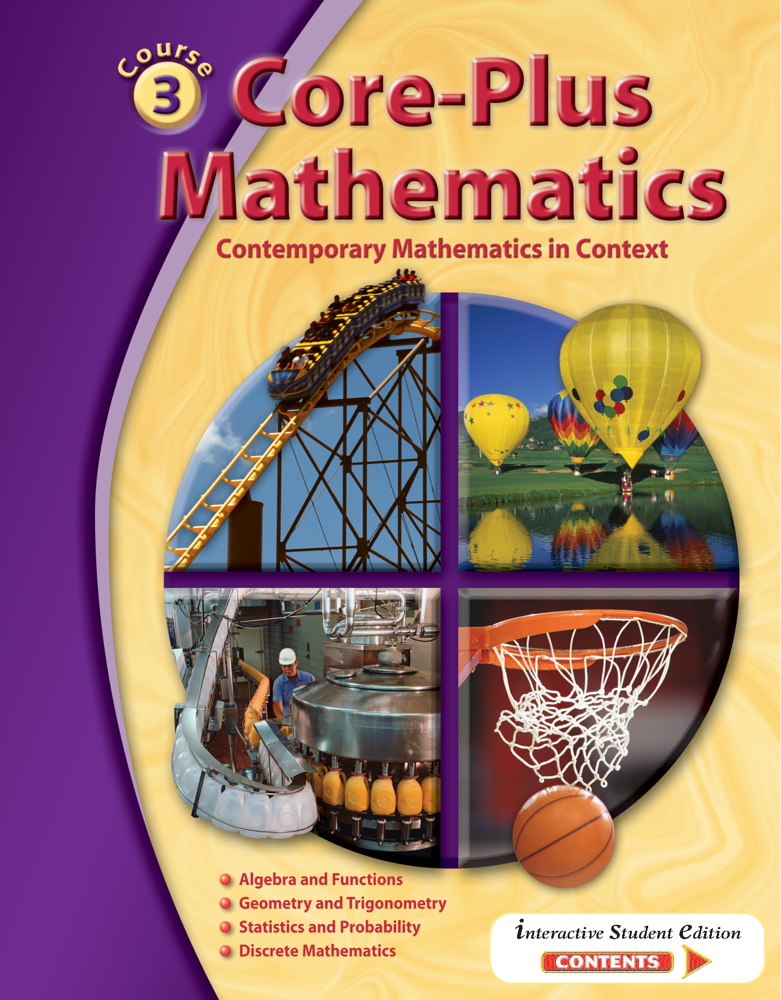
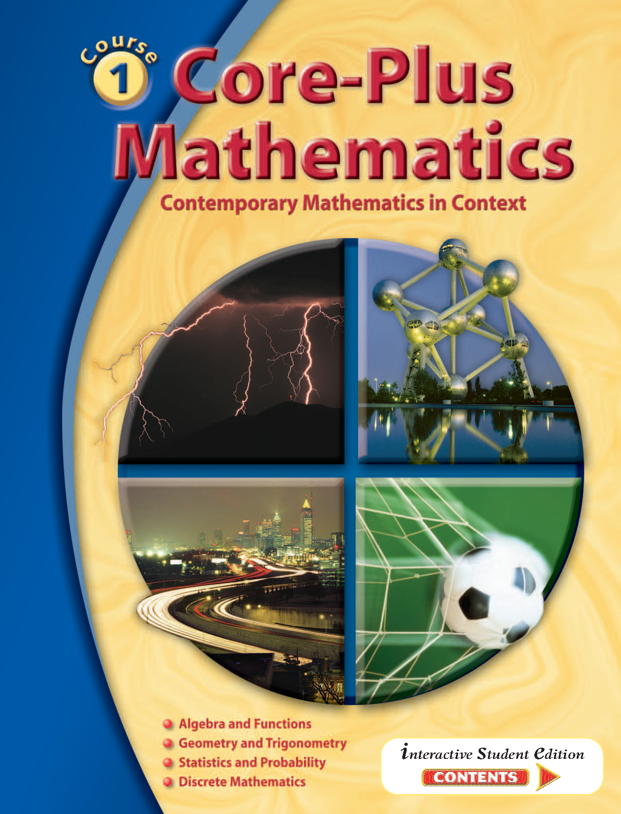
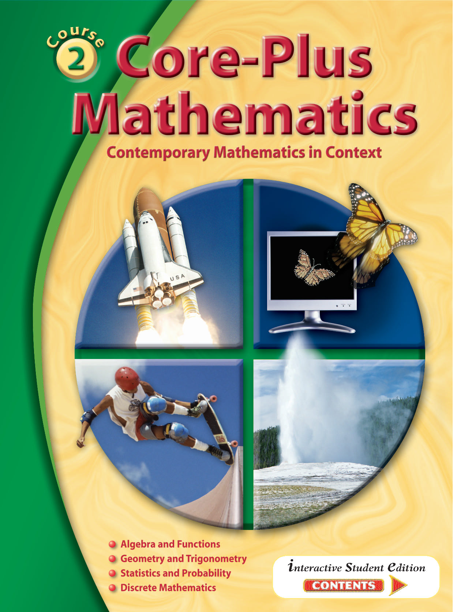

US Math Grade 6-8
US School Mathematics Curriculum (Common Core State Standards)
Welcome, students! This dedicated academic portal provides core textbooks, curriculum guides, and practice materials for US Middle School Mathematics (covering Grades 6, 7, and 8) aligned with the Common Core State Standards.
1. Introduction
US Middle School Mathematics (Grades 6-8) forms the critical bridge between elementary arithmetic and high school algebra and geometry. The curriculum is structured to build robust problem-solving skills, critical thinking, and mathematical modeling.
Key Conceptual Areas:
- Grade 6: Focuses on ratios and rates, rational numbers, basic algebraic expressions/equations, and introductory statistical thinking.
- Grade 7: Emphasizes proportional relationships, operations with rational numbers, linear expressions and equations, and geometric constructions.
- Grade 8: Prepares students for algebra through linear equations and functions, exponents and scientific notation, the Pythagorean theorem, and congruence/similarity.
Whether you are preparing for standard school exams, middle-school assessments, or private school entrance exams, NKK-Education Hub compiles the best resources to support your academic pathway.
2. Books
Access core textbooks, practice books, and reference workbooks for US Middle School Mathematics below:

Glencoe Math Connects Course 1: Study Guide and Intervention and Practice Workbook

Glencoe Math Connects Course 2: Math Skills Maintenance (Teacher Edition)
3. Practice Questions
Access topic-focused practice workbooks modeled after the MathMatters series for Grades 6, 7, and 8 middle school mathematics:
| Chapter | Lesson | Lesson Title | Worksheet |
|---|---|---|---|
| Chapter 1 | 1.1 | Collect and Interpret Data | Open PDF |
| 1.2 | Measures of Central Tendency and Range | Open PDF | |
| 1.3 | Stem-and-Leaf Plots | Open PDF | |
| 1.4 | Problem-Solving Skills Circle Graphs | Open PDF | |
| 1.5 | Frequency Tables and Pictographs | Open PDF | |
| 1.6 | Bar Graphs and Line Graphs | Open PDF | |
| 1.7 | Scatter Plots and Lines of Best Fit | Open PDF | |
| 1.8 | Box-and-Whisker Plots | Open PDF | |
| Chapter 2 | 2.1 | Units of Measure | Open PDF |
| 2.2 | Work with Measurements | Open PDF | |
| 2.3 | Perimeters of Polygons | Open PDF | |
| 2.4 | Area of Parallelograms and Triangles | Open PDF | |
| 2.5 | Solving Equations and Formulas | Open PDF | |
| 2.6 | Equivalent Ratios | Open PDF | |
| 2.7 | Circumference and Area of a Circle | Open PDF | |
| 2.8 | Proportions and Scale Drawings | Open PDF | |
| 2.9 | Area of Irregular Shapes | Open PDF | |
| Chapter 3 | 3.1 | Add and Subtract Signed Numbers | Open PDF |
| 3.2 | Multiply and Divide Signed Numbers | Open PDF | |
| 3.3 | Order of Operations | Open PDF | |
| 3.4 | Real Number Properties | Open PDF | |
| 3.5 | Variables and Expressions | Open PDF | |
| 3.6 | Writing Equations From Patterns | Open PDF | |
| 3.7 | Exponents and Scientific Notation | Open PDF | |
| 3.8 | Laws of Exponents | Open PDF | |
| 3.9 | Squares and Square Roots | Open PDF | |
| Chapter 4 | 4.1 | Language of Geometry | Open PDF |
| 4.2 | Polygons and Polyhedra | Open PDF | |
| 4.3 | Visualize and Name Solids | Open PDF | |
| 4.4 | Nets and Surface Area | Open PDF | |
| 4.5 | Isometric Drawings | Open PDF | |
| 4.6 | Perspective and Orthogonal Drawings | Open PDF | |
| 4.7 | Volumes of Prisms and Cylinders | Open PDF | |
| 4.8 | Volumes of Pyramids and Cones | Open PDF | |
| 4.9 | Surface Area of Prisms and Cylinders | Open PDF | |
| Chapter 5 | 5.1 | Introduction to Equations | Open PDF |
| 5.2 | Add or Subtract to Solve Equations | Open PDF | |
| 5.3 | Multiply or Divide to Solve Equations | Open PDF | |
| 5.4 | Solve Two-Step Equations | Open PDF | |
| 5.5 | Combine Like Terms | Open PDF | |
| 5.6 | Formulas | Open PDF | |
| 5.7 | Solving Addition and Subtraction Equations | Open PDF | |
| 5.8 | Graph Open Sentences | Open PDF | |
| 5.9 | Solve Inequalities | Open PDF | |
| Chapter 6 | 6.1 | Percents and Proportions | Open PDF |
| 6.2 | Write Equations for Percents | Open PDF | |
| 6.3 | Discount and Sale Price | Open PDF | |
| 6.4 | Tax Rates | Open PDF | |
| 6.5 | Simple Interest | Open PDF | |
| 6.6 | Commission | Open PDF | |
| 6.7 | Percent of Increase and Decrease | Open PDF | |
| 6.8 | Simple Interest | Open PDF | |
| Chapter 7 | 7.1 | Graphs and Functions | Open PDF |
| 7.2 | Coordinate Plane | Open PDF | |
| 7.3 | Relations and Functions | Open PDF | |
| 7.4 | Linear Graphs | Open PDF | |
| 7.5 | Slope of a Line | Open PDF | |
| 7.6 | Slope-Intercept Form of a Line | Open PDF | |
| 7.7 | Distance and the Pythagorean Theorem | Open PDF | |
| 7.8 | Solutions of Linear and Nonlinear Graphs | Open PDF | |
| Chapter 8 | 8.1 | Angles and Transversals | Open PDF |
| 8.2 | Beginning Constructions | Open PDF | |
| 8.3 | Diagonals and Angles of Polygons | Open PDF | |
| 8.4 | Combinations | Open PDF | |
| 8.5 | Translations in the Coordinate Plane | Open PDF | |
| 8.6 | Reflections and Line Symmetry | Open PDF | |
| 8.7 | Rotations and Tessellations | Open PDF | |
| Chapter 9 | 9.1 | Monomials and Polynomials | Open PDF |
| 9.2 | Add and Subtract Polynomials | Open PDF | |
| 9.3 | Multiply Monomials | Open PDF | |
| 9.4 | Multiply a Polynomial by a Monomial | Open PDF | |
| 9.5 | Factor Using Greatest Common Factor (GCF) | Open PDF | |
| 9.6 | Divide by a Monomial | Open PDF | |
| 9.7 | Multiplying Monomials and Polynomials | Open PDF | |
| Chapter 10 | 10.1 | Probability | Open PDF |
| 10.2 | Experimental Probability | Open PDF | |
| 10.3 | Sample Spaces and Tree Diagrams | Open PDF | |
| 10.4 | Counting Principle | Open PDF | |
| 10.5 | Independent and Dependent Events | Open PDF | |
| 10.6 | Experimental Probability | Open PDF | |
| 10.7 | Expected Value and Fair Games | Open PDF | |
| Chapter 11 | 11.1 | Optical Illusions | Open PDF |
| 11.2 | Inductive Reasoning | Open PDF | |
| 11.3 | Deductive Reasoning | Open PDF | |
| 11.4 | Venn Diagrams | Open PDF | |
| 11.5 | Logical Reasoning | Open PDF | |
| 11.6 | A Plan for Problem Solving | Open PDF | |
| 11.7 | Non-Routine Problem Solving | Open PDF |
| Chapter | Lesson | Lesson Title | Worksheet |
|---|---|---|---|
| Chapter 1 | 1.1 | Surveys and Sampling Methods | Open PDF |
| 1.2 | Measures of Central Tendency and Range | Open PDF | |
| 1.3 | Histograms and Stem-and-Leaf Plots | Open PDF | |
| 1.4 | Scatter Plots and Lines of Best Fit | Open PDF | |
| 1.5 | Statistics Scatter Plots and Lines of Fit | Open PDF | |
| 1.6 | Quartiles and Percentiles | Open PDF | |
| 1.7 | Misleading Graphs and Statistics | Open PDF | |
| 1.8 | Use Matrices to Organize Data | Open PDF | |
| Chapter 2 | 2.1 | Real Numbers | Open PDF |
| 2.2 | Order of Operations | Open PDF | |
| 2.3 | Write Variable Expressions | Open PDF | |
| 2.4 | Add and Subtract Variable Expressions | Open PDF | |
| 2.5 | Multiply and Divide Variable Expressions | Open PDF | |
| 2.6 | Simplify Variable Expressions | Open PDF | |
| 2.7 | Properties of Exponents | Open PDF | |
| 2.8 | Zero and Negative Exponents | Open PDF | |
| 2.9 | Using a Problem-Solving Plan | Open PDF | |
| Chapter 3 | 3.1 | Equations and Formulas | Open PDF |
| 3.2 | One-Step Equations | Open PDF | |
| 3.3 | Writing Two-Step Equations | Open PDF | |
| 3.4 | Two-Step Equations | Open PDF | |
| 3.5 | More Two-Step Equations | Open PDF | |
| 3.6 | Graph Inequalities on a Number Line | Open PDF | |
| 3.7 | Solve Inequalities | Open PDF | |
| 3.8 | Equations with Squares and Square Roots | Open PDF | |
| Chapter 4 | 4.1 | Experiments and Probability | Open PDF |
| 4.2 | Experimental Probability | Open PDF | |
| 4.3 | Sample Spaces | Open PDF | |
| 4.4 | Probability of Compound Events | Open PDF | |
| 4.5 | Independent and Dependent Events | Open PDF | |
| 4.6 | Permutations of a Set | Open PDF | |
| 4.7 | Combinations of a Set | Open PDF | |
| Chapter 5 | 5.1 | Elements of Geometry | Open PDF |
| 5.2 | Angles and Perpendicular Lines | Open PDF | |
| 5.3 | Parallel Lines and Transversals | Open PDF | |
| 5.4 | Properties of Triangles | Open PDF | |
| 5.5 | Congruent Triangles | Open PDF | |
| 5.6 | Quadrilaterals and Parallelograms | Open PDF | |
| 5.7 | Diagonals and Angles of Polygons | Open PDF | |
| 5.8 | Properties of Circles | Open PDF | |
| 5.9 | Circle Graphs | Open PDF | |
| Chapter 6 | 6.1 | Distance in the Coordinate Plane | Open PDF |
| 6.2 | Slope of a Line | Open PDF | |
| 6.3 | Write and Graph Linear Equations | Open PDF | |
| 6.4 | Write and Graph Linear Inequalities | Open PDF | |
| 6.5 | Linear and Nonlinear Functions | Open PDF | |
| 6.6 | Graph Quadratic Functions | Open PDF | |
| 6.7 | Writing Equations from Patterns | Open PDF | |
| 6.8 | Direct Variation | Open PDF | |
| 6.9 | Inverse Variation | Open PDF | |
| Chapter 7 | 7.1 | Translations in the Coordinate Plane | Open PDF |
| 7.2 | Reflections in the Coordinate Plane | Open PDF | |
| 7.3 | Rotations in the Coordinate Plane | Open PDF | |
| 7.4 | Line Symmetry and Rotational Symmetry | Open PDF | |
| 7.5 | Dilations in the Coordinate Plane | Open PDF | |
| 7.6 | Tessellations | Open PDF | |
| Chapter 8 | 8.1 | Parallel and Perpendicular Lines | Open PDF |
| 8.2 | Solve Systems of Equations Graphically | Open PDF | |
| 8.3 | Solve Systems by Substitution | Open PDF | |
| 8.4 | Solve Systems by Adding, Subtracting, or Multiplying | Open PDF | |
| 8.5 | Matrices and Determinant | Open PDF | |
| 8.6 | Graphs and Matrices | Open PDF | |
| 8.7 | Systems of Inequalities | Open PDF | |
| Chapter 9 | 9.1 | Add and Subtract Polynomials | Open PDF |
| 9.2 | Multiply Monomials | Open PDF | |
| 9.3 | Divide by a Monomial | Open PDF | |
| 9.4 | Multiply a Polynomial by a Monomial | Open PDF | |
| 9.5 | Multiply Binomials | Open PDF | |
| 9.6 | Solving Addition and Subtraction Equations | Open PDF | |
| 9.7 | Factor Using Greatest Common Factor (GCF) | Open PDF | |
| 9.8 | Perfect Squares and Difference of Squares | Open PDF | |
| Chapter 10 | 10.1 | Visualize and Represent Solids | Open PDF |
| 10.2 | Nets and Surface Area | Open PDF | |
| 10.3 | Surface Area of Three-Dimensional Figures | Open PDF | |
| 10.4 | Perspective Drawings | Open PDF | |
| 10.5 | Isometric Drawings | Open PDF | |
| 10.6 | Orthogonal Drawings | Open PDF | |
| 10.7 | Volume of Prisms and Pyramids | Open PDF | |
| 10.8 | Volume of Cylinders, Cones, and Spheres | Open PDF | |
| 10.9 | Volume of Prisms and Cylinders | Open PDF | |
| Chapter 11 | 11.1 | Similar Polygons | Open PDF |
| 11.2 | Indirect Measurement | Open PDF | |
| 11.3 | The Pythagorean Theorem | Open PDF | |
| 11.4 | Sine, Cosine, and Tangent Ratios | Open PDF | |
| 11.5 | Find Lengths of Sides in Right Triangles | Open PDF | |
| 11.6 | Find Measures of Angles in Right Triangles | Open PDF | |
| 11.7 | Special Right Triangles | Open PDF | |
| 11.8 | Trigonometric Applications | Open PDF | |
| Chapter 12 | 12.1 | Properties of Sets | Open PDF |
| 12.2 | Union and Intersection of Sets | Open PDF | |
| 12.3 | Logical Reasoning | Open PDF | |
| 12.4 | Converse, Inverse, and Contrapositive | Open PDF | |
| 12.5 | Inductive and Deductive Reasoning | Open PDF | |
| 12.6 | Patterns of Deductive Reasoning | Open PDF | |
| 12.7 | Logical Reasoning and Proof | Open PDF |
| Chapter | Lesson | Lesson Title | Worksheet |
|---|---|---|---|
| Chapter 1 | 1.1 | The Language of Mathematics | Open PDF |
| 1.2 | Real Numbers | Open PDF | |
| 1.3 | Union and Intersection of Sets | Open PDF | |
| 1.4 | Addition, Subtraction and Estimation | Open PDF | |
| 1.5 | Multiplication and Division | Open PDF | |
| 1.6 | Problem Solving Skills Use Technology | Open PDF | |
| 1.7 | Distributive Property and Properties of Exponents | Open PDF | |
| 1.8 | Exponents and Scientific Notation | Open PDF | |
| Chapter 2 | 2.1 | Patterns and Iteration | Open PDF |
| 2.2 | The Coordinate Plane, Relations, and Functions | Open PDF | |
| 2.3 | Linear Functions | Open PDF | |
| 2.4 | Solve One-Step Equations | Open PDF | |
| 2.5 | Solve Multi-Step Equations | Open PDF | |
| 2.6 | Solve Linear Inequalities | Open PDF | |
| 2.7 | Data and Measures of Central Tendency | Open PDF | |
| 2.8 | Displaying Data | Open PDF | |
| 2.9 | Misleading Statistics | Open PDF | |
| Chapter 3 | 3.1 | Points, Lines, and Planes | Open PDF |
| 3.2 | Types of Angles | Open PDF | |
| 3.3 | Segments and Angles | Open PDF | |
| 3.4 | Construction and Lines | Open PDF | |
| 3.5 | Inductive Reasoning in Mathematics | Open PDF | |
| 3.6 | Conditional Statements | Open PDF | |
| 3.7 | Deductive Reasoning and Proofs | Open PDF | |
| 3.8 | Logic Problems | Open PDF | |
| Chapter 4 | 4.1 | Triangles and Triangle Theorem | Open PDF |
| 4.2 | Congruent Triangles | Open PDF | |
| 4.3 | Congruent Triangles and Proofs | Open PDF | |
| 4.4 | Altitudes, Medians, and Perpendicular Bisectors | Open PDF | |
| 4.5 | Indirect Proof | Open PDF | |
| 4.6 | Inequalities in Triangles | Open PDF | |
| 4.7 | Polygons and Angles | Open PDF | |
| 4.8 | Special Quadrilaterals Parallelograms | Open PDF | |
| 4.9 | Special Quadrilaterals Trapezoids | Open PDF | |
| Chapter 5 | 5.1 | Ratio and Units of Measure | Open PDF |
| 5.2 | Perimeter, Circumference, and Area | Open PDF | |
| 5.3 | Probability and Area | Open PDF | |
| 5.4 | Areas of Irregular Figures | Open PDF | |
| 5.5 | Three-Dimensional Figures and Loci | Open PDF | |
| 5.6 | Surface Area of Three-Dimensional Figures | Open PDF | |
| 5.7 | Volume of Three-Dimensional Figures | Open PDF | |
| Chapter 6 | 6.1 | Slope of a Line and Slope-Intercept Form | Open PDF |
| 6.2 | Parallel and Perpendicular Lines | Open PDF | |
| 6.3 | Write Equations for Lines | Open PDF | |
| 6.4 | Systems of Equations | Open PDF | |
| 6.5 | Solve Systems by Substitution | Open PDF | |
| 6.6 | Solve Systems by Adding, Subtracting, and Multiplying | Open PDF | |
| 6.7 | Determinants | Open PDF | |
| 6.8 | Systems of Inequalities | Open PDF | |
| 6.9 | Linear Programming | Open PDF | |
| Chapter 7 | 7.1 | Ratios and Proportions | Open PDF |
| 7.2 | Similar Polygons | Open PDF | |
| 7.3 | Scale Drawings | Open PDF | |
| 7.4 | Postulates for Similar Triangles | Open PDF | |
| 7.5 | Triangles and Proportional Segments | Open PDF | |
| 7.6 | Parallel Lines and Proportional Segments | Open PDF | |
| 7.7 | Indirect Measurement | Open PDF | |
| Chapter 8 | 8.1 | Translations and Reflections | Open PDF |
| 8.2 | Rotations in the Coordinate Plane | Open PDF | |
| 8.3 | Dilations in the Coordinate Plane | Open PDF | |
| 8.4 | Multiple Transformations | Open PDF | |
| 8.5 | Addition and Multiplication with Matrices | Open PDF | |
| 8.6 | More Operations on Matrices | Open PDF | |
| 8.7 | Transformations and Matrices | Open PDF | |
| 8.8 | Matrices | Open PDF | |
| Chapter 9 | 9.1 | Review Percents and Probability | Open PDF |
| 9.2 | Probability Simulations | Open PDF | |
| 9.3 | Compound Events | Open PDF | |
| 9.4 | Independent and Dependent Events | Open PDF | |
| 9.5 | Permutations and Combinations | Open PDF | |
| 9.6 | Scatter Plots and Lines of Best Fit | Open PDF | |
| 9.7 | Standard Deviation | Open PDF | |
| Chapter 10 | 10.1 | Irrational Numbers | Open PDF |
| 10.2 | The Pythagorean Theorem | Open PDF | |
| 10.3 | Special Right Triangles | Open PDF | |
| 10.4 | Circles, Angles, and Arcs | Open PDF | |
| 10.5 | Circle Graphs | Open PDF | |
| 10.6 | Circles and Segments | Open PDF | |
| 10.7 | Constructions with Circles | Open PDF | |
| Chapter 11 | 11.1 | Adding and Subtracting Polynomials | Open PDF |
| 11.2 | Multiply by a Monomial | Open PDF | |
| 11.3 | Divide and Find Factors | Open PDF | |
| 11.4 | Multiply Two Binomials | Open PDF | |
| 11.5 | Find Binomial Factors in a Polynomial | Open PDF | |
| 11.6 | Special Factoring Patterns | Open PDF | |
| 11.7 | Factor Trinomials | Open PDF | |
| 11.8 | Factoring Trinomials | Open PDF | |
| 11.9 | More on Factoring Trinomials | Open PDF | |
| Chapter 12 | 12.1 | Graphing Parabolas | Open PDF |
| 12.2 | The General Quadratic Function | Open PDF | |
| 12.3 | Factor and Graph | Open PDF | |
| 12.4 | Complete the Square | Open PDF | |
| 12.5 | The Quadratic Formula | Open PDF | |
| 12.6 | Distance Formula | Open PDF | |
| 12.7 | Graphs to Equations | Open PDF | |
| Chapter 13 | 13.1 | The Standard Equation of a Circle | Open PDF |
| 13.2 | More on Parabolas | Open PDF | |
| 13.3 | Conic Sections | Open PDF | |
| 13.4 | Ellipses and Hyperbolas | Open PDF | |
| 13.5 | Direct Variation | Open PDF | |
| 13.6 | Inverse Variation | Open PDF | |
| 13.7 | Quadratic Inequalities | Open PDF | |
| 13.8 | Exponential Functions | Open PDF | |
| 13.9 | Logarithmic Functions | Open PDF | |
| Chapter 14 | 14.1 | Basic Trigonometry Ratios | Open PDF |
| 14.2 | Solve Right Triangles | Open PDF | |
| 14.3 | Graph the Sine Function | Open PDF | |
| 14.4 | Experiment with the Sine Function | Open PDF | |
| 14.5 | Graphing Trigonometric Functions | Open PDF |
4. Regents Past Papers
Search and filter official New York Regents state exam papers. Use the control panel below to filter by exam year and middle school grade level:
NY Regents Mathematics (Grade 6-8) Past Papers List
Loading past papers...
5. Middle School Mathematics Reference Books
Access extra reference books, algebra foundations, and advanced geometry guides for US middle school math prep. Select any book to view or download:

Core-Plus Mathematics: Contemporary Mathematics in Context (Course 3, Student Edition)

Core-Plus Mathematics: Contemporary Mathematics in Context (Course 1, Student Edition)
